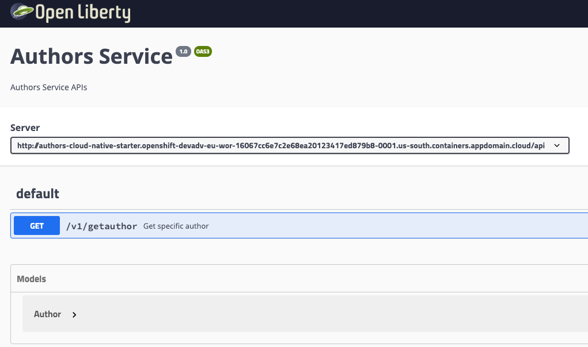

Running the Java Microservice locally¶
Note: This lab is structured in understanding and hands-on tasks.
Step 1: Understanding¶
In this workshop we run a Microservice that has been implemented with Java EE and Eclipse MicroProfile.
The Microservice has been kept as simple as possible, so that it can be used as a starting point for other Microservices. It contains the following functionality:
- Image with OpenJ9, OpenJDK, Open Liberty and MicroProfile: Dockerfile
- Maven project: pom.xml
- Open Liberty server configuration: server.xml
- Health endpoint: HealthEndpoint.java
- Kubernetes yaml files: deployment.yaml and service.yaml
- Sample REST GET endpoint: AuthorsApplication.java, GetAuthor.java and Author.java
This service provides a REST API 'getauthor'. Normally we would use a database but in this example we just simulate with local sample data. With this small example we touch the following topics:
- Usage of Maven for Java
- Configuration of an OpenLiberty Server
- Implementation of a REST GET endpoint with MicroProfile
- Health check implementation using a MicroProfile for Kubernetes
- Definition of a Dockerfile with the reuse for existing containers from Dockerhub
Definition of the Image¶
For the image we use a stack of open source components to run the Java Microservice on Open Liberty.
- OpenJ9 0.12.1
- OpenJDK 8u202-b08 from AdoptOpenJDK
- Open Liberty 18.0.0.4
- MicroProfile 3.0
In the Dockerfile we define how to build the container image. For detailed information check the Dockerfile documentation.
When we build a new container image we usually start with an existing container image that already contains a minimum of the configuration we need, for example the OS, the Java version or even more. For this we search DockerHub or on the internet to find a starting point which fits to our needs.
Using a multi-stage build.¶
Inside of our Dockerfile we use two stages to build the container image . The reason for the two stages is that we want to be independend of an existing local environment when we build our production services. With this concept we don't have to ensure that e.g. Java and Maven or correct versions of them are installed on the local machine of the developers.
With this two stage approach there is one container responsible to build the Microservice, let us call this container build environment container, and another container will contain the Microservice itself, we call this the production container. Only this production container is later used.
Build environment container¶
In the following Dockerfile sample we can see how we create our build environment container based on the maven 3.5 image from DockerHub.
We use the pom file that we defined before to build our Authors service with RUN mvn -f /usr/src/app/pom.xml clean package.
FROM maven:3.5-jdk-8 as BUILD
COPY src /usr/src/app/src
COPY pom.xml /usr/src/app
RUN mvn -f /usr/src/app/pom.xml clean package
Production container¶
The starting point for the Production container is an OpenLiberty container.
We copy the Authors service code together with the server.xml for the OpenLiberty server to this container.
Note: The service.xml defines port 3000 as the port where we can reach the Authors Microservice. That port must be exposed with EXPOSE 3000 in the Dockerfile.
FROM open-liberty:19.0.0.9-kernel-java11
COPY liberty/server.xml /config/
COPY --from=0 /usr/src/app/target/authors.war /config/apps/
# This script will add the requested XML snippets, grow image to be fit-for-purpose and apply interim fixes
# https://github.com/WASdev/ci.docker
RUN configure.sh
EXPOSE 3000
Step 2: Hands-on tasks - Run the container locally¶
That lab needs a local Docker installation.
Step 1: Test the Microservice in a local container¶
Open the the Terminal session where you cloned the Cloud-Native-Starter project to your local computer.
cd $ROOT_FOLDER/authors-java-jee
docker build -t authors .
docker run -i --rm -p 3000:3000 authors
Step 2: Open the Swagger UI of the mircoservice in a browser¶
http://localhost:3000/openapi/ui/

Congratulations you have finished exercise 1.